Click me ♫

Click me ♫
One area of interest for me is Artificial Intelligence and Signal Processing. I have experience in various areas of Machine Learning such as Computer Vision or Natural Language Processing. In particular, I am very interested in the applications of Artificial Iintelligence in Biomedical Engineering and Neuroscience.
Another area of interest for me is the programming of Embedded Systems and Microcontrollers. Τhrough various academic projects I have become familiar with Arduino, Raspberry-Pi and STM32 boards. My programming mainly concerns the data acquisition from sensors and driving of peripherals. My working experience focused on testing of ASICs with FPGA based data acquisition systems.
MATLAB
C / C++
Linux bash
Verilog/Vivado
Java
R
HTML / CSS / Javascript
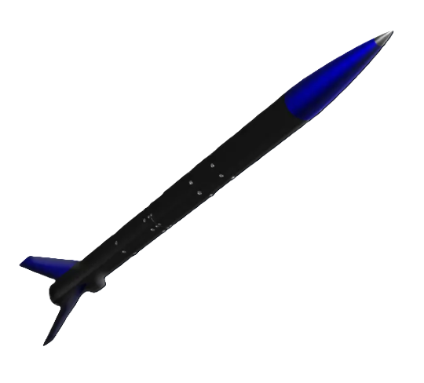
One area of interest for me is Artificial Intelligence and Signal Processing. I have experience in various areas of Machine Learning such as Computer Vision or Natural Language Processing. In particular, I am very interested in the applications of Artificial Iintelligence in Biomedical Engineering and Neuroscience.
Another area of interest for me is the programming of Embedded Systems and Microcontrollers. Τhrough various academic projects I have become familiar with Arduino, Raspberry-Pi and STM32 boards. My programming mainly concerns the data acquisition from sensors and driving of peripherals. My working experience focused on testing of ASICs with FPGA based data acquisition systems.
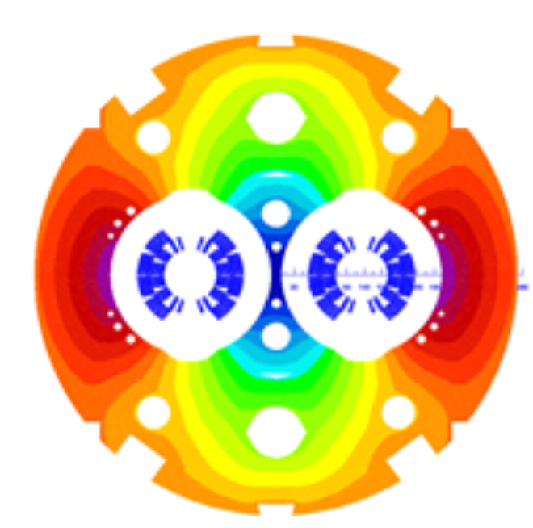
One area of interest for me is Artificial Intelligence and Signal Processing. I have experience in various areas of Machine Learning such as Computer Vision or Natural Language Processing. In particular, I am very interested in the applications of Artificial Iintelligence in Biomedical Engineering and Neuroscience.
Another area of interest for me is the programming of Embedded Systems and Microcontrollers. Τhrough various academic projects I have become familiar with Arduino, Raspberry-Pi and STM32 boards. My programming mainly concerns the data acquisition from sensors and driving of peripherals. My working experience focused on testing of ASICs with FPGA based data acquisition systems.
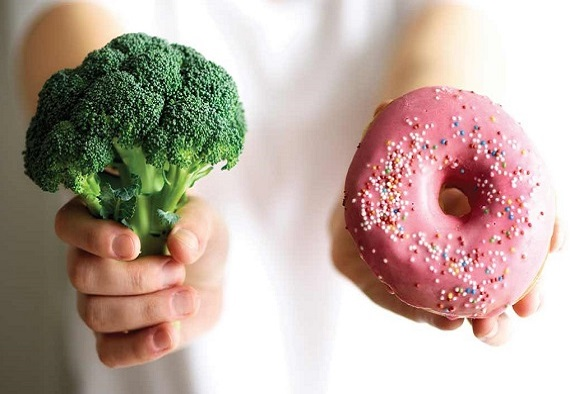
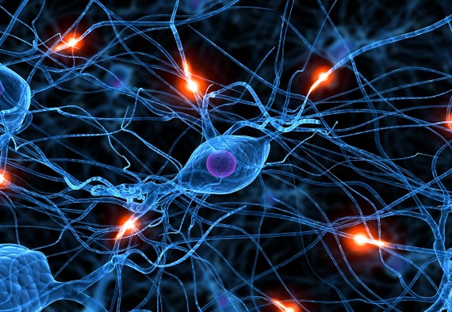
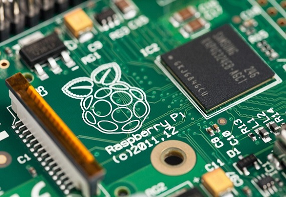
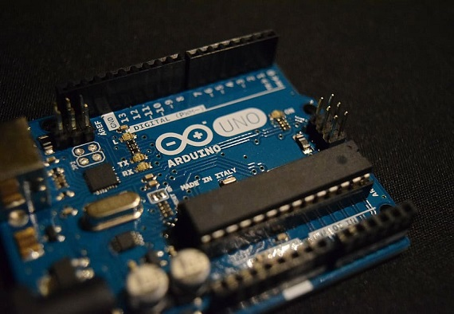
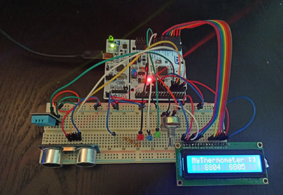
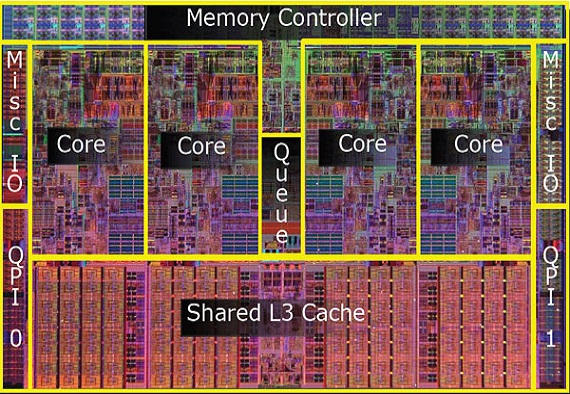
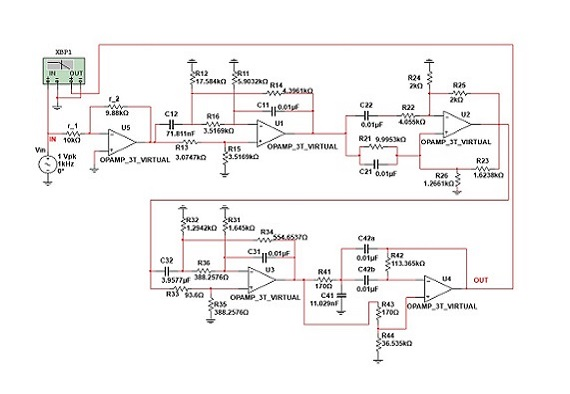
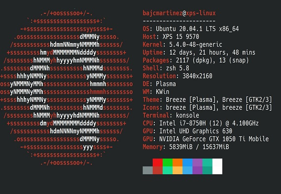
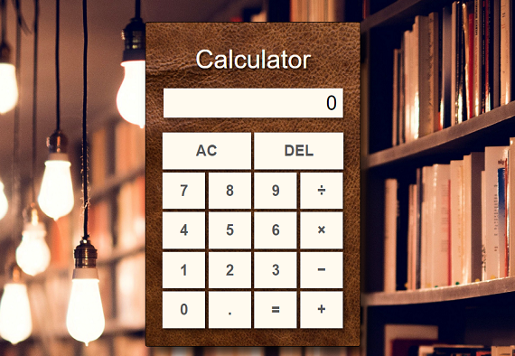
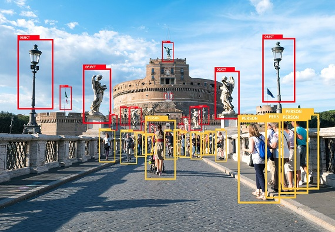
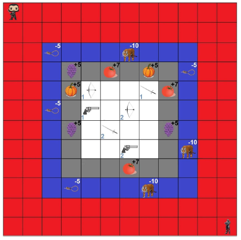
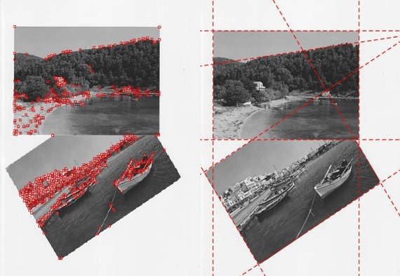
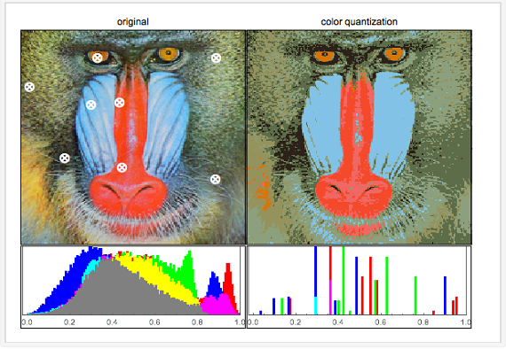